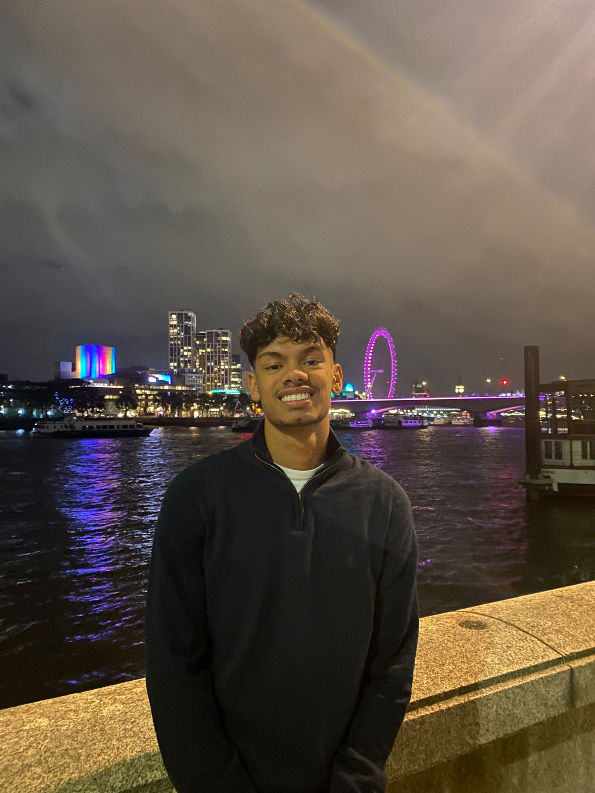

About Me

Hi, my name is Devan and this is the website I built using JavaScript,
HTML and CSS.
I'm 21 years old and I am currently studying my masters in Computer
Science at UCL
During my second year of Chemical Engineering at the University of
Leeds I realised Chemical Engineering wasn't the career for me and so
started to look elsewhere. After learning more about finance and
technology through virtual internships, I started to teach my self
code. I instantly fell in love with coding and that lead me to get a
software engineering internship at Capital One and persue a Masters in
Computer Science
In my spare time I like to watch football, go to the gym, cook, play
the drums and play chess
Contact: devangovind@gmail.com |
LinkedIn